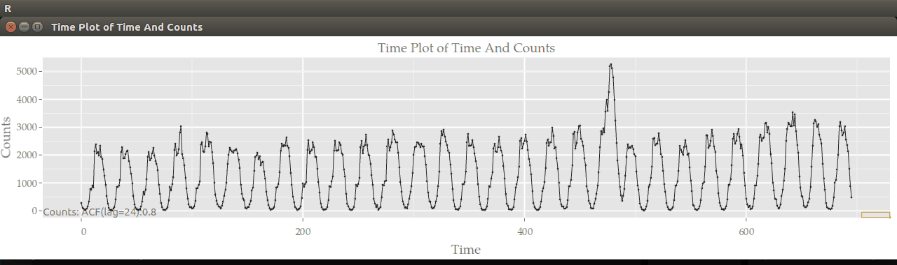
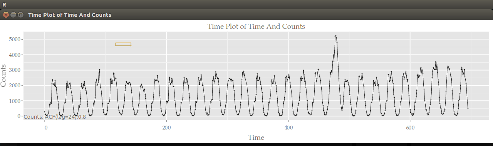
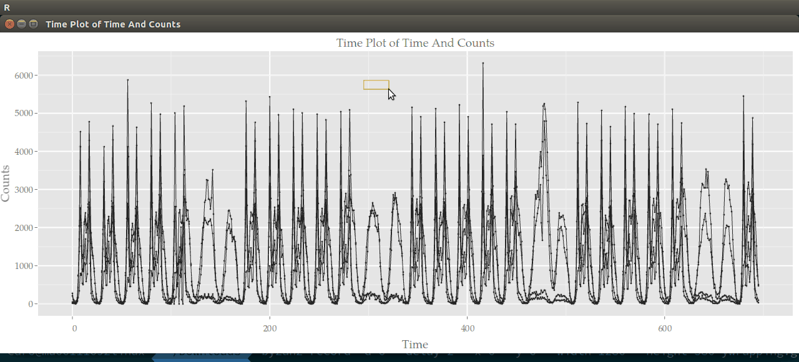

Enabling Interactivity on Displays of
Melbourne Pedestrian Sensors
Using Cranvas
Earo Wang
slides on http://bit.ly/bex6510-slides
Interactivity %>% let data walk, stretch, and dance
Most movements/interactions can be formulated into algebra. \[
\mathbf{m}_{ij} = f_{i}(\mathbf{p}_i, \mathbf{u}_{ij}, \mathbf{l}_{ij}, j,
(\mathbf{x, y})_{0})
\]
- Wrapping: change x/y-coordinates of the data \[
\mathbf{m}_{ij} = \begin{cases}
(-\left(\left[\frac{\mathbf{x} - x_{(1)} + 1}{\Delta_{n-j}}\right] - 1\right)
\times \Delta_{n-j}, 0) & 1 \le j \le n - 3\\
(-\left(\left[\frac{\mathbf{x} - x_{(1)} + 1}{\Delta_{3}}\right] - 1\right)
\times \Delta_{3}, 0) & j \ge n - 2
\end{cases}
\]
- x-wrapping: explore seasonality and temporal dependence

- y-wrapping: compare magnitude of peaks and troughs
- Switching: switch between line and area displays
- Mirroring: vertically split series at a given value and reflects the bottom half across this axis (
f) \[
\mathbf{m}_{ij} = \begin{cases}
(0, p + \max(p - \mathbf{y}, \mathbf{y} - p) - \mathbf{y}) & j = 1, 3, 5, \cdots \\
(0, 0) & j = 2, 4, 6, \cdots
\end{cases}
\]

- Faceting: create small multiples \[
\mathbf{m}_{ij} = \begin{cases}
(0, p_{i1}(\mathbf{l}_i - 1)j) & 1 \le j \le \frac{1}{p_{i1}} \\
(0, \mathbf{l}_i - 1) & j \ge \frac{1}{p_{i1}}
\end{cases}
\]
- Shifting: select and shift a series against another series \[
\mathbf{m}_{ij} = ((u_{ij2} - u_{ij1}) \times I\left\{\mathbf{l}_{ij} = u_{ij3}
\right\}, 0)
\]

Manage data or movements?
- Incremental \[
(\mathbf{x, y})_{s_{t + 1}} = (\mathbf{x, y})_{s_{t}} + \mathbf{m}_{i1}
\]
- Baseline \[
(\mathbf{x, y})_{s_{t + 1}} = (\mathbf{x, y})_{s_{0}} + \sum_{i, j}\mathbf{m}_{ij}
\]